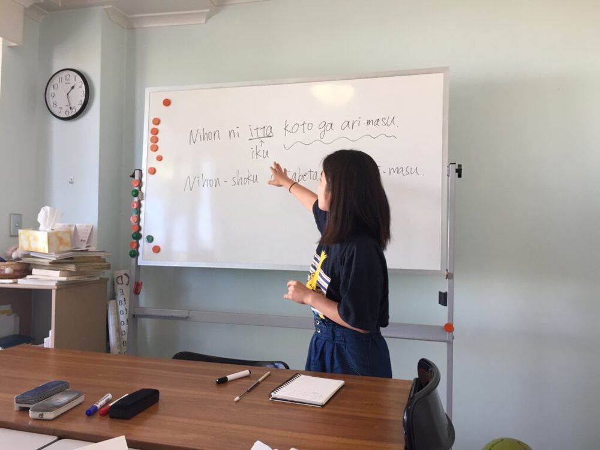

1986年 シドニー創立｜日本語教師養成講座
世界で日本語を
教えられる教師へ。
海外・オンラインで日本語を教えたい人のための日本語教師養成講座。英語を使って教える方法と、日本語だけで教える方法の両方を学びます。
- 1986年 シドニーで創立
- 9,000名以上の卒業生
- 90か国で活躍
- 420時間の総合講座
- A$1,740総額（約20万円・教材費と郵送料を含む）。半年で修了も可能
講座と料金
講座を選ぶと、期間・料金・分割払いが分かります。
まず読んでほしい
はじめての方へ

WJLCの日本語教師養成講座
日本語教師は、日本人と日本を代表する草の根外交官です。
日本語教師という素晴らしい仕事をご存知ですか。日本人なら無条件にネイティヴスピーカーの教師で、それだけで実質的な資格を有し、学習者は皆外国人です。彼らは私たちの教える日本語を通して、初めて日本人と日本を知り、理解します。すなわち、日本語教師は日本人と日本を代表する草の根外交官です。
日本語教師は学習者を友にしてその輪は全世界に広がります。教えてみて日本人であることの喜びをあらためて覚えます。「やりがいと喜び」という現代社会の中で失われつつある大切なものを日本語を教えるというこの仕事は必ず与えてくれます。皆さんもその可能性にチャレンジしてみてはいかがでしょう。自分自身に対して、また人生に対して新しい発見があることを約束します。
WJLC日本語教師養成講座は、1986年にシドニーで開講し、通信、通学共とも海外、オーストラリアにある日本語教師養成学校の中では最も伝統があります。今日までに9,000人以上の受講者が本校の養成講座を修了しており、多くの卒業生がオーストラリア、日本、欧米諸国、アジア諸国、その他世界中90ヶ国で活躍しています。
WJLCが日本国内にある日本語教師養成機関と大きく違うところは1986年以来、海外で生の日本語学習者のニーズに応え、リアルタイムで日本語の教え方を世界中に発信している点です。また、本講座は420時間日本語教師養成通信講座（通信教育）としても最も格安かつ伝統があります。その他、登録日本語教員筆記試験の対策も行っております。
WJLCの日本語教師養成講座は日本語教師になるという夢の実現と日本語教育に寄与しています。
日本語教師になるにはへ講座の特徴
4つの特徴
卒業・在校生の声
573件の声が、世界中から届いています。
お知らせ
お知らせ
- Little Japan Brisbaneでは日本語講師を募集
- シドニー東部のＪＣＳ日本語補習校エッジクリフ校で教員及びアシスタント募集
- 受講生の声を追加
- 必見!! 登録日本語教員試験及び日本語教育能力検定試験の両方に一発で合格した本講座受講生からの貴重なアドバイス
- 日本語教師の英語力の必要性について
- 日本人ワーホリ・留学生にも大人気の日本語教師養成講座
- New! 国家資格制度について
- 卒業生が経営する日本語学校でオンライン日本語教師を募集
- 登録日本語教員（国家資格）の筆記試験対策について
- WJLCの卒業生が経営する日本語学校ナナワディン日本語学校（オーストラリア・メルボルン）で教師を募集しています
- ホーンズビー日本語学校教師募集
☆オンラインで日本語を教える方法も学べ、自宅から世界中の人たちに日本語が教えられます